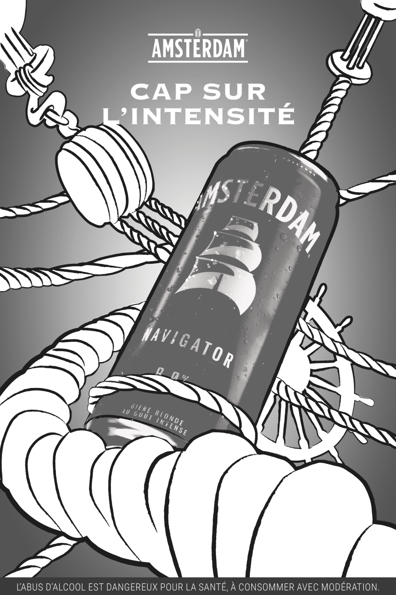
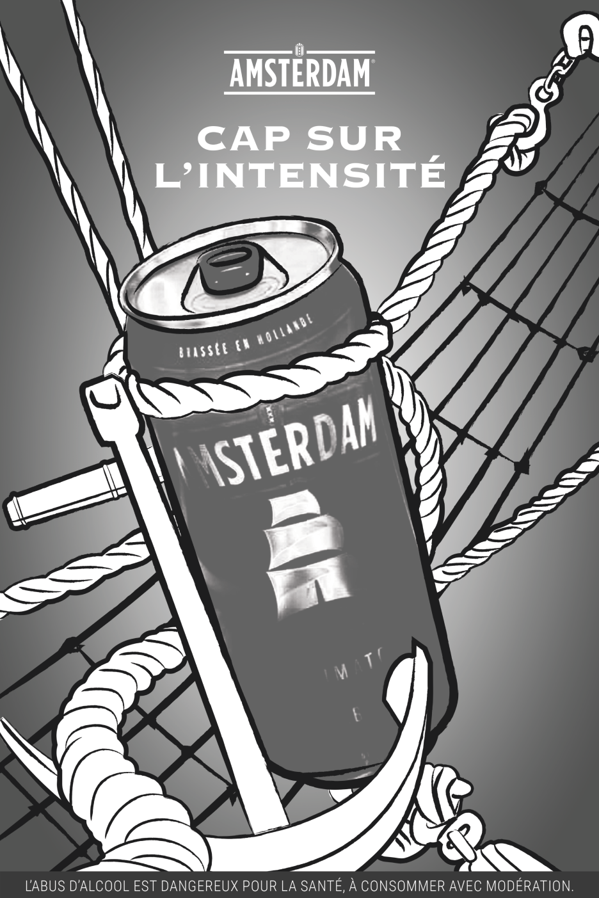
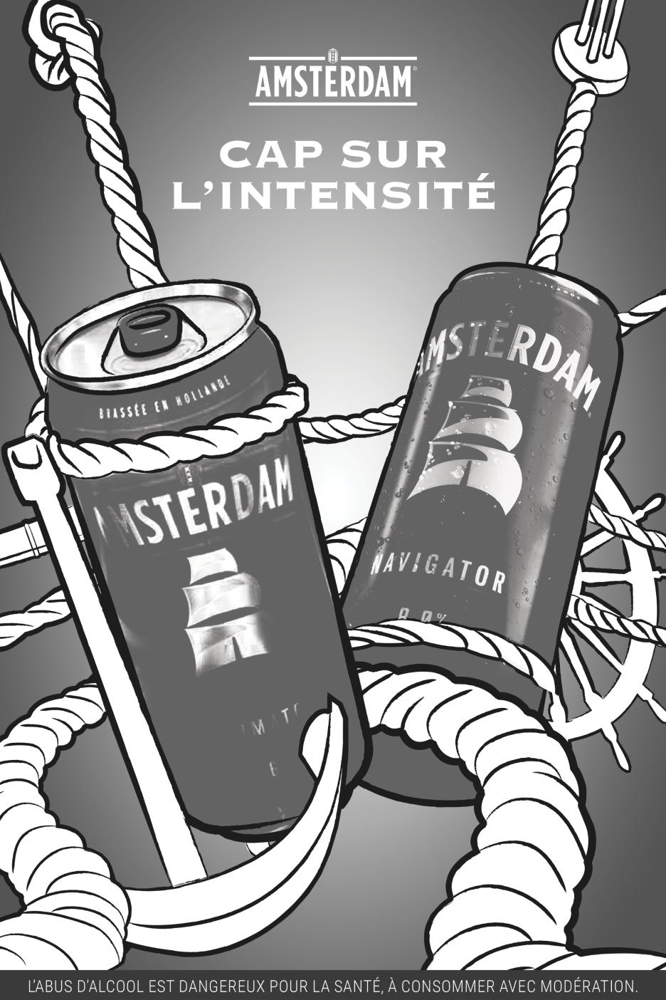
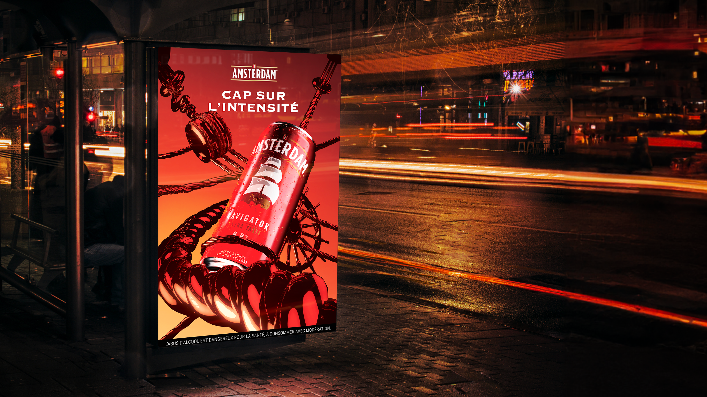

Amsterdam - Print
Print 3D
Prompt : Une campagne print pensée pour mettre en valeur notre gamme de bières, dans le respect de la réglementation en vigueur en France, tout en adoptant une approche résolument esthétique et soignée.



...l
Après 10 ans sans communication print, nous avons réfléchi à plusieurs approches, dont une version en 3D pour parler de cette marque hollandaise.
...l
La marque Amsterdam comprend aujourd’hui quatre bières avec différentes intensités, mais toutes avec un goût intense. Pour mettre en avant les canettes, nous avons pensé à différentes compositions avec des éléments liés à l’univers marin de la marque. Le tout dans un rendu chrome 3D pour remettre en lumière la gamme.
